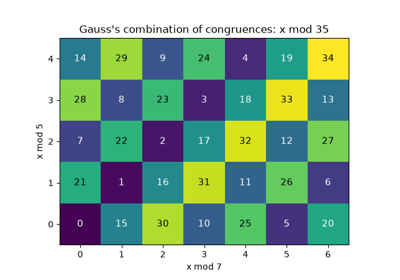
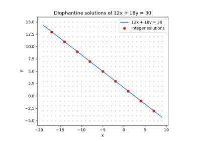
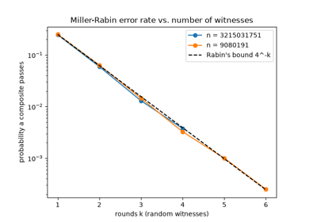
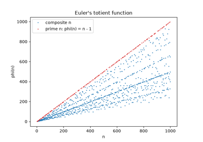
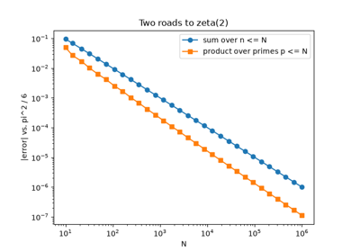

Examples#
This gallery walks through every public feature of mathematicskit.number_theory:
modular arithmetic, primality testing, the Chinese Remainder Theorem,
continued fractions, multiplicative functions, and Diophantine equations.
See also the narrative tutorial:
Each script in this gallery is self-contained and can be run directly with
python examples/number_theory/<section>/<script>.py.
Sections#
modular_arithmetic – the extended Euclidean algorithm, modular inverses, and fast modular exponentiation (used in RSA).
primality – trial division, Miller-Rabin, the sieve of Eratosthenes, and the Lucas-Lehmer test.
crt – the Chinese Remainder Theorem.
continued_fractions – continued-fraction expansion and best rational approximations.
totient – Euler’s totient function and other multiplicative functions.
diophantine – linear and Pell Diophantine equation solvers.
sums_of_squares – Fermat’s two-squares and Lagrange’s four-square theorems.
zeta – Euler’s product formula and the Basel problem.
quadratic_residues – Legendre and Jacobi symbols, quadratic reciprocity, and Tonelli-Shanks square roots.
prime_distribution – the prime number theorem and Dirichlet’s primes in arithmetic progressions.
factorization – Pollard’s rho method.
Continued fractions#
Continued-fraction expansion and best rational approximations.

Chinese Remainder Theorem#
Combining congruences with pairwise-coprime moduli.


Gauss’s Disquisitiones: congruences and the remainder theorem
Diophantine equations#
Linear and Pell Diophantine equation solvers.

Diophantus and the linear equation ax + by = c
Integer factorization#
Pollard’s rho method.
Modular arithmetic#
The extended Euclidean algorithm, modular inverses, and fast modular exponentiation.

Primality#
Trial division, Miller-Rabin, and the sieve of Eratosthenes.

The Miller-Rabin probabilistic primality test

The prime-counting function and the prime number theorem
Distribution of primes#
The prime number theorem and primes in arithmetic progressions.
Quadratic residues#
Legendre and Jacobi symbols, quadratic reciprocity, and modular square roots.
Sums of squares#
Fermat’s two-squares theorem and Lagrange’s four-square theorem.
Multiplicative functions#
Euler’s totient function, the Mobius function, and divisor sums.

Euler’s totient function and Euler’s theorem

The zeta function#
Euler’s product formula and the Basel problem.

The Basel problem and Euler’s product formula